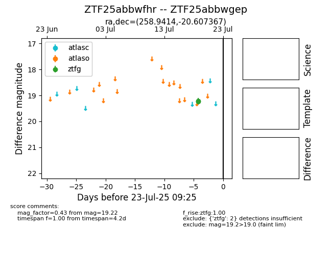

Target ZTF25abbwfhr at 2025-07-23 12:37, see:
FINK: fink-portal.org/ZTF25abbwfhr
Lasair: lasair-ztf.lsst.ac.uk/objects/ZTF25abbwfhr
ALeRCE: alerce.online/object/ZTF25abbwfhr
alt names
ZTF25abbwgep (ztf,fink)
ZTF25abbwfhr (
coordinates:
equatorial (ra, dec) = (258.9414,-20.60737)
galactic (l, b) = (3.3211,+10.20967)
photometry
last ztfg=19.22
2 ztfg detections
